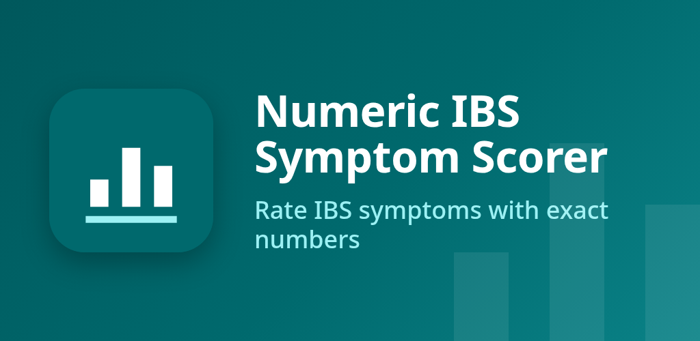
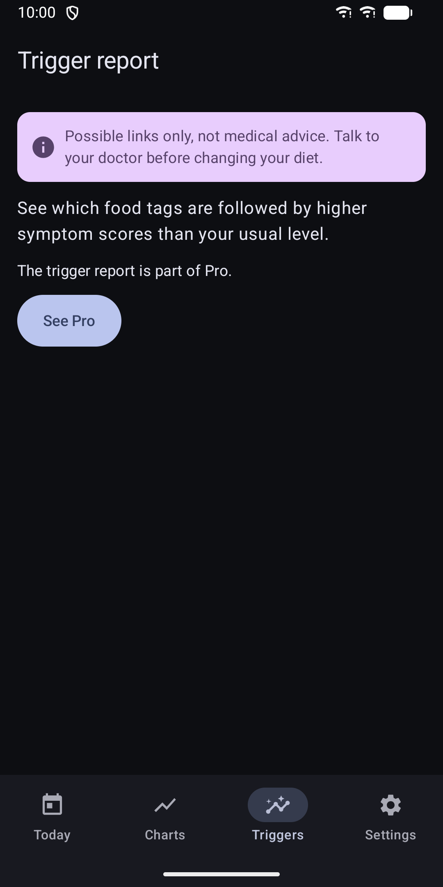

Numeric IBS: Reizdarm-Tagebuch
Reizdarm-Symptome von 0 bis 10 bewerten, Stuhlgang und Essen protokollieren.





Über die App
Numeric IBS Symptom Scorer ist ein privates Tagebuch für Menschen mit Reizdarmsyndrom oder Verdacht darauf, die ihre Beschwerden mit klaren Zahlen festhalten möchten, für sich selbst oder für die Ärztin oder den Arzt. Genaue Zahlen statt Schieberegler Bewerte Bauchschmerzen, Blähbauch, Blähungen, Krämpfe und Übelkeit von 0 bis 10, indem du eine Zahl antippst oder eintippst. Füge bis zu fünf eigene Symptome hinzu. Erfasse beliebig viele Einträge pro Tag, jeweils mit optionaler Notiz. Was du nicht bemerkt hast, bleibt einfach unbewertet. Ein richtiges Stuhlgang-Protokoll Halte jeden Stuhlgang mit Bristol-Stuhltyp (gezeichnete Symbole und Text), Dringlichkeit von 0 bis 10, vollständiger oder unvollständiger Entleerung, optionalem Hinweis auf Blut oder Schleim und einer Notiz fest. Essensprotokoll mit Tags Notiere, was du gegessen hast, und vergib eigene, wiederverwendbare Tags wie Milchprodukte, Zwiebel oder Kaffee. Tagesansicht und Diagramme Sieh den ganzen Tag in zeitlicher Reihenfolge und bearbeite oder lösche jeden Eintrag. Diagramme zeigen Tagesdurchschnitt und Maximum je Symptom, Stuhlgänge pro Tag und die Verteilung der Bristol-Typen über 7, 30 oder 90 Tage oder den gesamten Zeitraum, ohne Begrenzung des Verlaufs. Zu jedem Diagramm gibt es eine Zusammenfassung in Textform. Widget und Erinnerung Das Startbildschirm-Widget zeigt die neuesten Werte des Tages und die Anzahl der Stuhlgänge, mit Schnellerfassungs-Buttons. Eine optionale tägliche Erinnerung hilft dir, dranzubleiben. Privat von Grund auf Kein Konto, keine Cloud, keine Werbung, keine Analyse-Tools. Die App hat keine Internetberechtigung. Dein Tagebuch liegt in einer verschlüsselten Datenbank auf deinem Smartphone. Eine optionale App-Sperre nutzt Fingerabdruck, Gesicht, Displaysperre oder eine App-PIN, und solange sie an ist, sind Screenshots der App blockiert. Pro als einmaliger Kauf • Auslöser-Bericht: dein durchschnittlicher Wert einige Stunden nach jedem Essens-Tag im Vergleich zu deinem üblichen Niveau, mit der Anzahl der zugrunde liegenden Mahlzeiten. • Export als PDF-Bericht für die Arztpraxis oder als CSV-Dateien für einen beliebigen Zeitraum. • Verschlüsselte, passwortgeschützte Sicherung und Wiederherstellung, gespeichert wo du willst. Erfassen, Diagramme, Widget, Erinnerung und App-Sperre bleiben kostenlos. Helles und dunkles Design, Layouts für Smartphone und Tablet und volle Screenreader-Unterstützung. Die App ist derzeit nur auf Englisch verfügbar. Diese App ist kein medizinischer Rat und stellt keine Diagnosen. Angezeigte Zusammenhänge mit Lebensmitteln sind nur mögliche Zusammenhänge. Sprich mit deiner Ärztin oder deinem Arzt über deine Beschwerden.